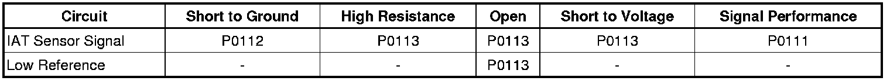
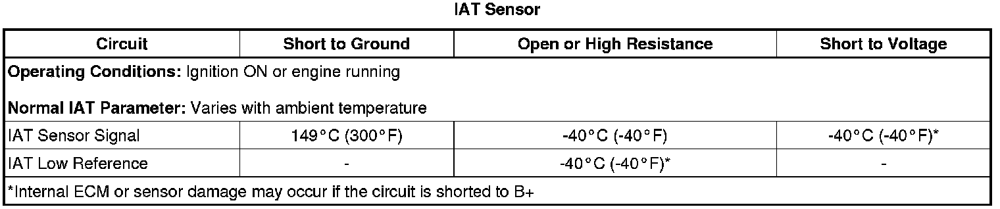

P0113
DTC P0112 or P0113
Diagnostic Instructions
* Perform the Diagnostic System Check - Vehicle (Initial Inspection and Diagnostic Overview) prior to using this diagnostic procedure.
* Review Strategy Based Diagnosis (Initial Inspection and Diagnostic Overview) for an overview of the diagnostic approach.
* Diagnostic Procedure Instructions (Initial Inspection and Diagnostic Overview) provides an overview of each diagnostic category.
DTC Descriptors
DTC P0112
- Intake Air Temperature (IAT) Sensor Circuit Low Voltage
DTC P0113
- Intake Air Temperature (IAT) Sensor Circuit High Voltage
Diagnostic Fault Information

Typical Scan Tool Data

Circuit/System Description
The intake air temperature (IAT) sensor is a variable resistor. The IAT sensor has a signal circuit and a low reference circuit. The IAT sensor measures the temperature of the air entering the engine. The engine control module (ECM) supplies 5 volts to the IAT signal circuit, and a ground for the low reference circuit.
Conditions for Running the DTC
P0112
* DTC P0116, P0117, P0118, P0128, P0608, or P0609 are not set.
* The ECT sensor is colder than 150°C (302°F).
* The engine run time is greater than 10 seconds.
* The DTC runs continuously when the above conditions are met.
P0113
* DTC P0101, P0102, P0103, P0116, P0117, P0118, P0128, P0608, or P0609 are not set.
* The ECT sensor is warmer than -40°C (-40°F).
* The mass air flow (MAF) sensor is less than 512 g/s.
* The engine run time is greater than 10 seconds.
* The DTC runs continuously when the above conditions are met.
Conditions for Setting the DTC
P0112
The ECM detects that the IAT sensor is warmer than 148°C (298°F) for greater than 5 seconds.
P0113
The ECM detects that the IAT sensor is colder than -39°C (-38°F) for greater than 5 seconds.
Action Taken When the DTC Sets
DTCs P0112 and P0113 are Type B DTCs.
Conditions for Clearing the MIL/DTC
DTCs P0112 and P0113 are Type B DTCs.
Diagnostic Aids
* If the engine is cold, at the initial ignition ON, a properly functioning IAT sensor will indicate a gradually increasing scan tool IAT Sensor parameter. This is due to the heat that is generated by the MAF sensor heating elements.
* Depending on the ambient temperature, an IAT sensor signal circuit or low reference circuit that is shorted to the MAF sensor signal circuit can cause DTC P0113 to set. This condition causes a rapid fluctuation in the IAT Sensor parameter.
* An IAT sensor signal circuit that is shorted to the MAF sensor ignition circuit can cause DTC P0113 to set.
Reference Information
Schematic Reference
Engine Controls Schematics (Electrical Diagrams)
Connector End View Reference
Component Connector End Views (Connector Views)
Electrical Information Reference
* Circuit Testing (Component Tests and General Diagnostics)
* Connector Repairs (Component Tests and General Diagnostics)
* Testing for Intermittent Conditions and Poor Connections (Component Tests and General Diagnostics)
* Wiring Repairs (Component Tests and General Diagnostics)
DTC Type Reference
Powertrain Diagnostic Trouble Code (DTC) Type Definitions (Diagnostic Trouble Code Descriptions)
Scan Tool Reference
Control Module References (Programming and Relearning) for scan tool information
Circuit/System Verification
1. Perform this verification procedure only when the ignition has been OFF for 8 hours or more.
2. Ignition ON, observe the scan tool IAT and ECT sensor parameters. The ECT, IAT, and ambient temperature should be within 15°C (27°F) of each other.
3. Engine running, observe the scan tool IAT Sensor parameter. The reading should be between -39 to +120°C (-38 to +248°F) depending on the current ambient temperature and the vehicle operating conditions.
4. Ignition ON, observe the scan tool start-up ECT and start-up IAT Sensor parameters. Compare those sensor parameters to each other and also to the ambient temperature to determine if the IAT sensor is within an acceptable operating range.
5. Operate the vehicle within the Conditions for Running the DTC. You may also operate the vehicle within the conditions that you observed from the Freeze Frame/Failure Records data.
Circuit/System Testing
1. Ignition OFF, disconnect the harness connector at the MAF/IAT sensor.
2. Ignition OFF for 90 seconds, test for less than 5 ohms of resistance between the low reference circuit terminal D and ground.
• If greater than the specified value, test the low reference circuit for an open/high resistance. If the circuit tests normal, replace the ECM.
3. Ignition ON, verify the scan tool IAT Sensor parameter is colder than -39°C (-38°F).
• If warmer than the specified value, test the signal circuit terminal E for a short to ground. If the circuit tests normal, replace the ECM.
Important: If a short to voltage is found on the IAT signal circuit, the 3A fuse in the jumper wire will open.
4. Install a 3A fused jumper wire between the signal circuit terminal E and a ground. Verify the scan tool IAT Sensor parameter is greater than 149°C (300°F).
• If less than the specified value, test the signal circuit for a short to voltage or an open/high resistance. If the circuit tests normal, replace the ECM.
5. If all circuits test normal, test or replace the MAF/IAT sensor.
Component Testing
Measure the resistance of the IAT sensor and compare the IAT sensor resistance to the values listed in the Temperature vs. Resistance table. Refer to Temperature Versus Resistance (Temperature Versus Resistance) .
Repair Instructions
Perform the Diagnostic Repair Verification (Verification Tests) after completing the diagnostic procedure.
* Mass Airflow Sensor/Intake Air Temperature Sensor Replacement (Service and Repair)
* Control Module References (Programming and Relearning) for ECM replacement, setup, and programming